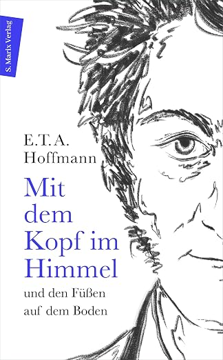
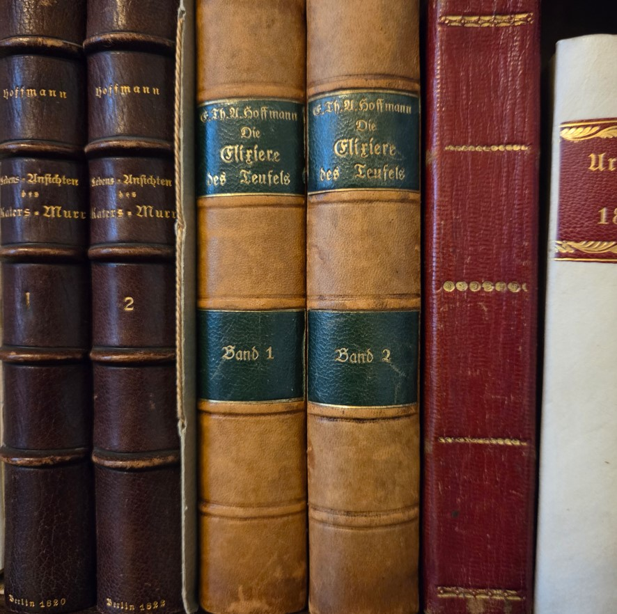
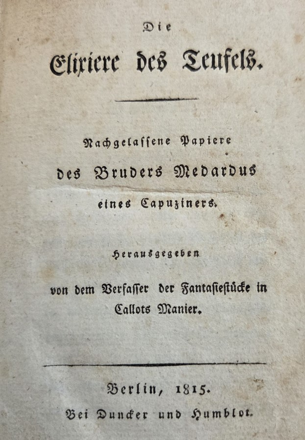
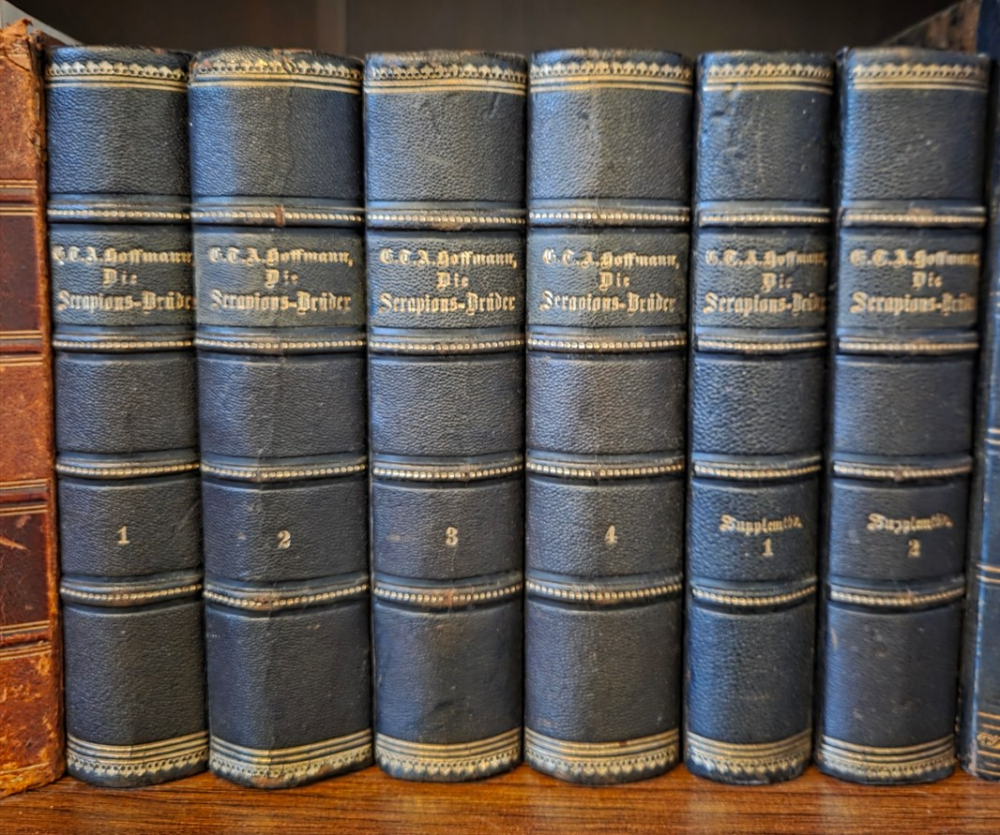
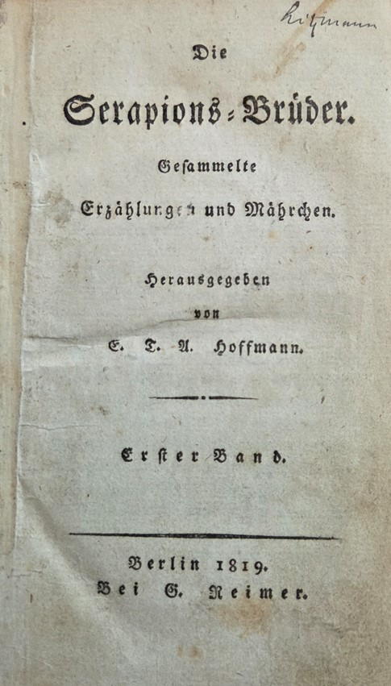
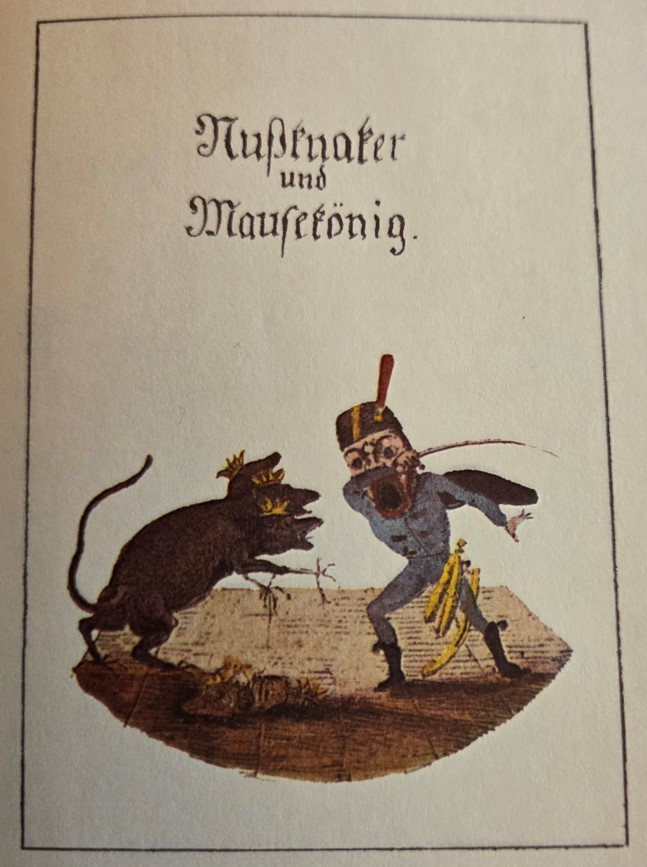
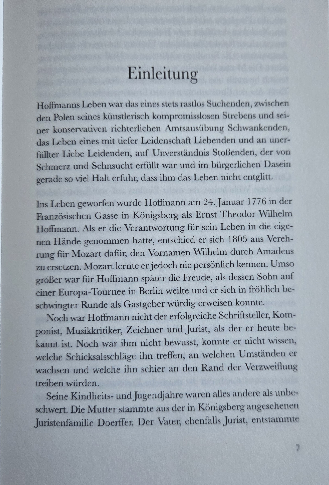
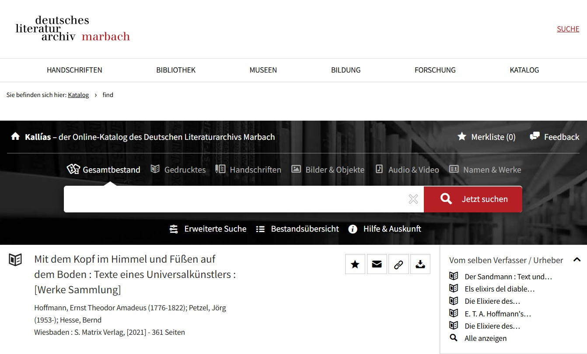
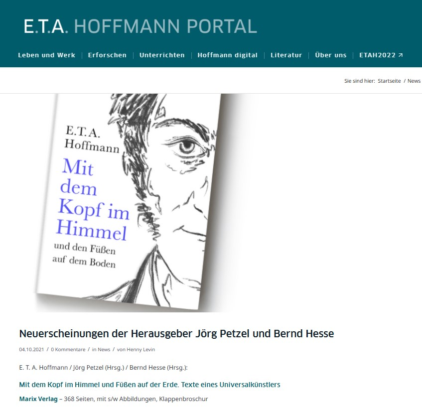

E. T. A. Hoffmann – Mit dem Kopf im Himmel und den Füßen auf dem Boden
In Vorbereitung auf das Hoffmann-Jahr 2022 zum 200. Todestag E. T. A. Hoffmanns waren Bernd Hesse und Jörg Petzel Herausgeber des Lesebuches E. T. A. Hoffmann – Mit dem Kopf im Himmel und den Füßen auf dem Boden. Texte eines Universalkünstlers.

Die Werkauswahl stellt die Erzählungen, Märchen und die beiden Romane des romantischen Universalkünstlers in den Mittelpunkt. Zugleich wird Hoffmann als Musiker, Komponist und Zeichner sichtbar. Ein prägendes Charakteristikum seines literarischen Werkes ist der oftmals beinahe unmerkliche Übergang vom prosaischen Alltag in das Fantastische. Seine Figuren bewegen sich nicht allein in poetisch-magischen Räumen, sondern bleiben zugleich mit der Wirklichkeit verbunden.
Idealistische Künstler, die an den Anforderungen des Alltags, an Nichtanerkennung oder unerfüllter Liebe scheitern und bisweilen dem Wahnsinn verfallen, begegnen in Hoffmanns Werk ebenso wie Komik, Ironie, Groteske und schauerliches Grauen. Auch seine intensive Auseinandersetzung mit der zeitgenössischen Medizin und den Naturwissenschaften findet ihren Niederschlag in zahlreichen Texten.
Das Lesebuch bietet einen chronologischen Querschnitt durch Hoffmanns fantastisches Prosawerk. Zwei musiktheoretische Arbeiten sowie zahlreiche Karikaturen erweitern die Auswahl und erinnern daran, dass Hoffmanns künstlerisches Schaffen weit über die Literatur hinausreichte.
Arbeit mit den Originalausgaben
Eine Besonderheit der Edition lag in der Arbeit mit historischen Originalausgaben. Die Herausgeber schrieben Texte aus ihren eigenen Sammlungen von Erstausgaben E. T. A. Hoffmanns ab. Dabei wurde die ursprüngliche Schreibweise beibehalten – einschließlich zeittypischer Besonderheiten und auch solcher Schreib-, Satz- und Druckfehler, die sich in den Originalausgaben finden.


Auf diese Weise entstand keine sprachlich modernisierte Ausgabe, sondern ein Lesebuch, das seinen Leserinnen und Lesern auch etwas von der ursprünglichen Gestalt der Texte vermittelt. Spätere Editionen von Hoffmanns Werken wurden vielfach den jeweils geltenden sprachlichen und editorischen Konventionen angepasst; die Arbeit unmittelbar an den historischen Drucken eröffnet dagegen einen besonderen Blick auf die Texte in der Gestalt ihrer Entstehungszeit.


Neben der mitunter mühevollen Editionsarbeit lag darin zugleich der besondere Reiz des Projektes: unmittelbar an den alten Ausgaben der Elixiere des Teufels zu arbeiten, sich mit den Serapions-Brüdern in ihrer historischen Textgestalt zu beschäftigen oder Hoffmanns berühmtes Märchen Nussknacker und Mausekönig anhand eines historischen Druckes neu zu lesen.

Einleitung und biografischer Überblick
Bernd Hesse verfasste für den Band die ausführliche Einleitung mit einem biografischen Überblick zu E. T. A. Hoffmann. Dabei wurden neuere Ergebnisse der Hoffmann-Forschung berücksichtigt und das Leben des Juristen, Schriftstellers, Komponisten, Musikkritikers, Zeichners und Karikaturisten in seinen unterschiedlichen künstlerischen und beruflichen Zusammenhängen dargestellt.

Das Lesebuch in literarischen Sammlungen und Portalen
Die Werkauswahl wurde in den Katalog des Deutschen Literaturarchivs Marbach aufgenommen. Auch das E. T. A. Hoffmann Portal der Staatsbibliothek zu Berlin stellte das Buch im Zusammenhang mit Neuerscheinungen zu Hoffmann vor.


So verbindet die Edition die Freude an Hoffmanns fantastischer Literatur mit dem Versuch, den historischen Texten möglichst nahe zu kommen und zugleich den Universalkünstler Hoffmann in der ganzen Vielfalt seines Schaffens sichtbar werden zu lassen.